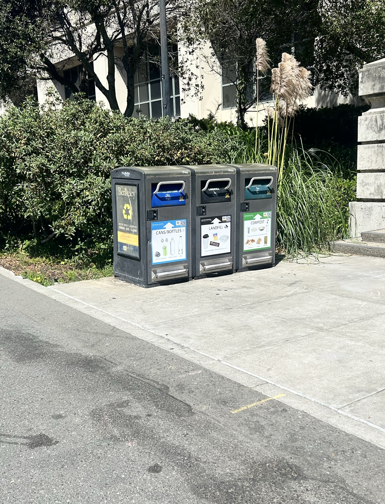
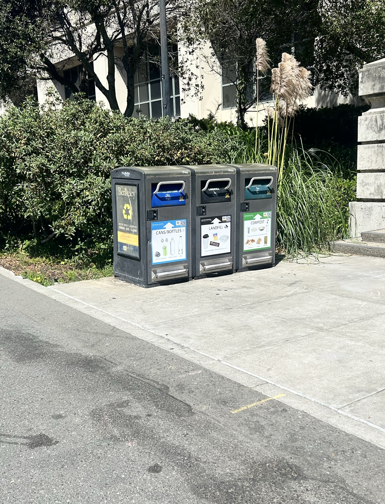

part1
Selfie: The Wrong Way vs. The Right Way
this is Jovie Yin's website for cs180 lab0
Selfie: The Wrong Way vs. The Right Way
this is Jovie Yin's website for cs180 lab0


Architectural Perspective Compression
this is Jovie Yin's website for cs180 lab0


The Dolly Zoom
this is Jovie Yin's website for cs180 lab0
 



© 2025 我的实验结果展示网页. 保留所有权利。